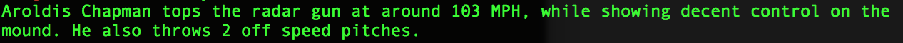

This week at DBC we had a strong focus on classes in Ruby. A class basically acts as a blueprint or construction of an object in Ruby. Something new that I am going to be implementing in my code this week our instance variables, these are variables that will be set for each new instance of a class. In my example this week, I will be attempting to create a mock scouting report that can be used by scouts looking for ways to store and manage the information they have gathered when looking at a new player.
First, let’s look at the code:

As you can see, I created a new class and named it Player.(class Player)
Now since we will be scouting a bunch of players from around the country, we can create instance variables for our players attributes, which will save us the time in having to create new variables for each player that we scout. Instead, we can just simply fall back on the instance variables we created. Instance variables you will see begin with ‘@.’
Our scouts will be looking at Pitchers today, so the 4 instance variables I created for this example our; @name(Players name), @velocity(How fast he can throw a fastball?), @amt_off(How many off speed pitches does he throw?), @control(Does he have good control?).
The next thing you see in my code, is that I defined a new method called “report.” What this method will do is it will take all the information that I stored on the player within each variable, and spit out the info with the guidelines that I provided it.
Finally, I create a new player(reds_player) and filled in the information accordingly. (reds_player = Player.new("Aroldis Chapman", 103, 2, “decent”))
To run the code, I simply type: reds_player.report and this is the output:

It's always awesome when it works.. Pretty cool right?